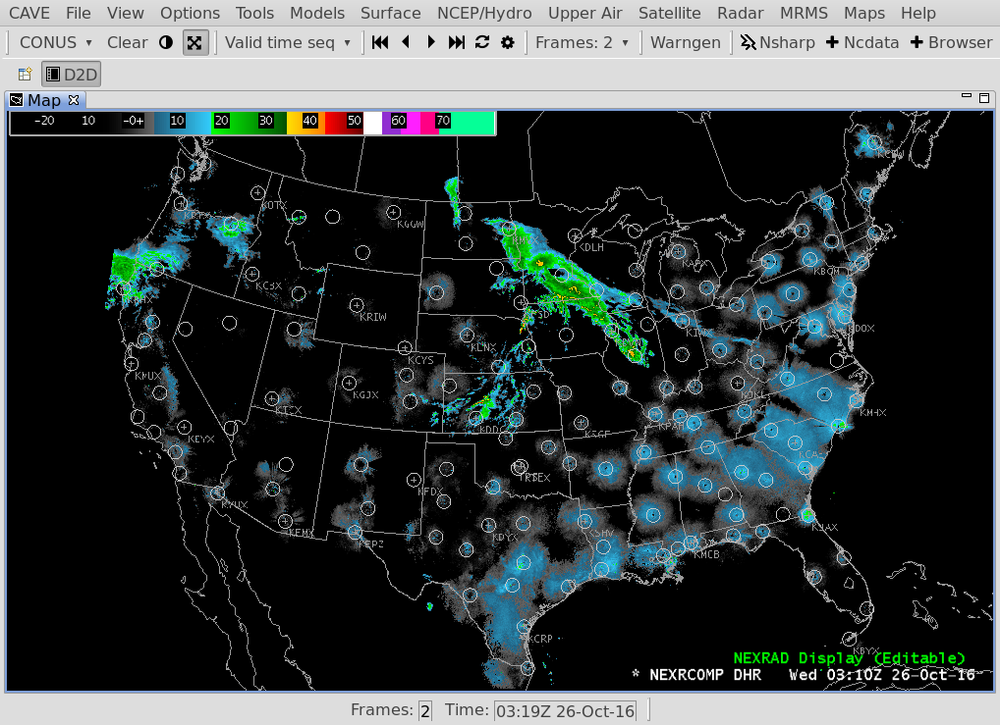
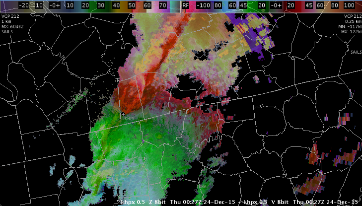
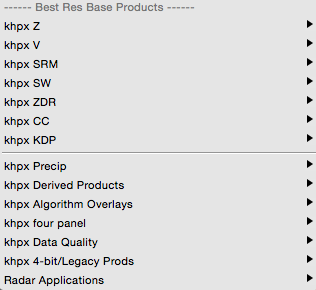
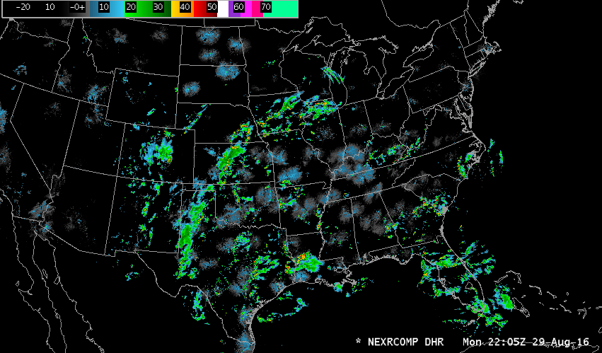
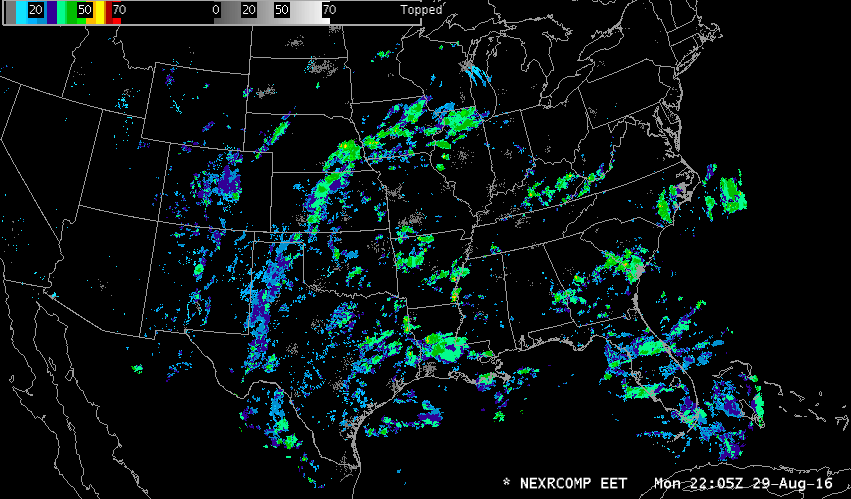

NEXRAD Radar Display
The Unidata D2D Perspective features a selectable NEXRAD station display over a loop of the FNEXRAD Digital Hybrid Reflectivity product. Selecting any station will open a two-panel reflectivity and velocity view for the selected station.


NEXRAD & TDWR Station Menus
Individual NEXRAD station menus are accessible in Radar > NEXRAD Stations and are grouped alphabetically for a condensed submenu structure. With only the NEXRAD3 feedtype (NEXAD2 being disabled), notice that only some of the menu items will out with available data.

Best Res Z+SRM8 / Z+V
The radar combination products Z+SRM and Z+V are precombined formats of the reflectivity and storm relative motion or velocity, displayed together via a single menu selection. SRM products include the storm motion vector information, which is plotted in the upper left corner of the Main Display Pane.


4-panel Z+SRM, ZDR+V, KDP+HC, CC+SW
4-panel Z, ZDR, HC+KDP, CC
This section enables you to load multiple base and dual-pol products, which are then simultaneously displayed. The label of this section of the menu describes the format for loading the products: Z+SRM in the upper left quadrant, ZDR+V in the upper right quadrant, KDP+HC in the lower left quadrant, and CC+SW in the lower right quadrant. Primary dual-pol base data analysis is best accomplished using the All Tilts base data option (4 panel all tilts with 8 products loaded), though you may use the single tilts (e.g., 0.5 base data) for longer time duration loops.
To load 4 panel displays containing multiple elevation angles of the same product, you would select the four panel option and then select the desired set of 4 panels from the four panel submenu.

All Tilts allows you to step or animate in either space or time. Selecting one of the All Tilts buttons will load all the tilts available from the latest volume scan. It will continue to load tilts from previous volume scans until it has loaded as many frames as indicated on the frame count menu. Auto updates will add higher tilts from the latest volume scan, replacing a tilt from the oldest volume.
After loading an All Tilts display, Shift + LEFT ARROW and Shift + RIGHT ARROW and looping will take you through the frames in the order in which the system loaded them (without regard to volume scan or tilt). The UP ARROW and DOWN ARROW will step the display up or down in a volume scan allowing the tilts to change for a fixed time. The RIGHT ARROW and LEFT ARROW will step the display forward or backward through time at a fixed tilt. Once you have set the mode of motion (vertical or time), the Page Up/Page Down keys will start and adjust loop speed. To switch from vertical to time mode or from time to vertical mode, press the desired arrow key.
If you hit the up or down arrow key in a standard (not All-Tilts) display, looping and stepping are disabled until you hit either the left or right arrow key or one of the stepping buttons on the menu. Once an arrow key (Left, Right, Up, Down) has been pressed, the stepping/animation controls on the main window toolbar and the Page Up/Page Down keys will function in that same mode. For example, assume the UP ARROW or DOWN ARROW key is pressed; the menu controls will now operate through the tilts at a fixed time, e.g., you can go to the lowest tilt by selecting the First Frame iconified button.
Best Res Base Products
This section is divided into two parts. The upper part lists individual products: four base products and three dual-pol products (ZDR, CC, and KDP). The lower part includes submenus for accessing multiple products and applications. The following describes the submenus grouped in the lower part of the Best Res Base Products section.
- Precip: In addition to the QPE dual-pol products, this submenu includes the legacy precip products, which include Storm Total, One Hour, Three Hour, and User Selectable precipitation products. A suite of snowfall products is also available on the Precip submenu. All are available for request (OTR, RMR), and the first four can be added to an RPS (Routine Product Set) list. All of these products are available on any scale.
- Derived Products: The Derived Products submenu includes Layer Reflectivity, Cross Section, and Other products displayed on any scale. Derived products include precipitation, storm (mesocyclone, hail, tornado), and wind derivations.
- Algorithm Overlays: The Algorithm Overlays submenu includes legacy algorithm overlays and the ML dual-pol overlay.
- four panel: The four panel submenu includes menu entries for Z+V, Z+SRM 8- and 4-bit, and some other combinations that are presented in 4-panel mode, with a different elevation angle or product in each panel.
- Data Quality: The Data Quality products, accessible by a pull-right submenu, include Clutter Filter Control and reflectivity and velocity clutter probability products.
- 4-bit/Legacy Prods: The 4-bit/Legacy Prods submenu uses generic selectors that load 8-bit (256 level) data, with legacy 4-bit (16 level) and 3-bit (8 level) data filling in when no 8-bit data is available.
- Radar Applications: The Radar Applications submenu provides access to all the radar applications and radar tools.

MRMS
FNEXRAD Composites
DHR

DLV

EET

HHC

DAA

DTA

Mosaic Radar Plots
Mosaics available via this menu use data from up to nine nearby radars. Additional optional
mosaics on cascading menus provide a limited list of radar products from a predefined set of WSR-88D radars within a given region. Your System Manager or site Administrator can set up such mosaics by: /awips2/edex/data/utility/common_static/site/<SITE>/radar/radarInUse.txt. A mosaicInfo.txt table will only work while logged on to an AWIPS workstation.
N0Q
DSP
DTA
DAA
Radar Applications
Estimated Actual Velocity (EAV)
A velocity (V) display from the radar shows only the radial component of the wind, so the indicated speed depends on the direction of the wind and the azimuth (direction) from the radar. Consider, for example, a north wind. Straight north of the radar, the full speed of the wind will be seen on the V product. As one moves around to the east of the radar, the radial component gets smaller, eventually reaching zero straight east of the radar. If the wind direction is known, then the actual wind speed can be computed by dividing the observed radial speed by the cosine of the angle between the radar radial and the actual direction. The EAV tool allows you to provide that angle and use the sampling function of the display to show the actual wind speed.

Four-dimensional Stormcell Investigator (FSI)
The Four-dimensional Stormcell Investigator (FSI) was developed by the National Severe Storms Laboratory for its Warning Decision Support System Integrated Information. This technology allows users to create and manipulate dynamic cross-sections (both vertical and at constant altitude), such that one can “slice and dice” storms and view these data in three-dimensions and across time.
V-R Shear
This tool is used in conjunction with Doppler velocity data to calculate the velocity difference (or "shear") of the data directly under the end points. As with the Baselines, this feature comes up editable and the end points can be dragged to specific gates of velocity data. When in place, the speed difference (kts), distance between end points (nautical miles), shear (s-1), and distance from radar (Nmi) are automatically plotted next to the end points and in the upper left corner of the Main Display Pane. A positive shear value indicates cyclonic shear, while a negative value indicates anticyclonic shear. If either end point is not directly over velocity data, the phrase "no data" is reported for the shear value. This tool is also useful in determining gate-to-gate shear. Simply place the two end points directly over adjacent gates of velocity data.
- "Snapping" VR Shear: If you are zoomed in over an area when you load VR - Shear, and the VR - Shear Baseline does not appear, click B3 to "snap" the Baseline to where the mouse cursor is located.
- VR - Shear in 4 Panel: You can use the VR - Shear Tool when the large display is in 4 panel mode. The VR - Shear overlay is loaded in different colors for each panel. There are actually four copies of the program running, and each behaves independently. This means that you can get accurate readings in any one of the four panels — one VR - Shear panel is editable at a time. To activate, click B2 on the VR - Shear legend in the desired panel and position the query line to the echoes of interest.